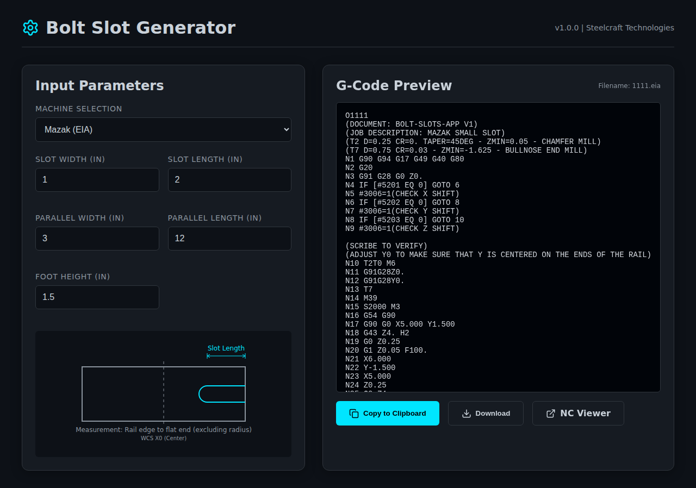
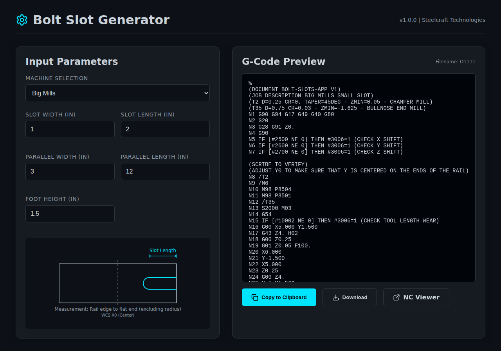

Bolt Slot Generator User Guide
⚠️ IMPORTANT: This tool only works if the slots are on both ends and centered on the parallel (the most common configuration).
If the slots are off-center, if it is a bolt-on foot with multiple slots, or if there are slots on only one end, DO NOT USE THIS APP. Please see a CNC programmer.
1 Measure Features
Open your part in Fusion 360 or eDrawings and measure the following required features:
- Slot Width: The width of the bolt slot.
- Slot Length: The length of the slot from the rail edge to the flat end (excluding radius).
- Parallel Width: The overall width of the parallel.
- Parallel Length: The overall length of the parallel.
- Foot Height: The height of the foot feature.
2 Input Parameters
Select your machine controller (Mazak or Big Mills) and enter the measurements you took in Step 1.

3 Verify on NC Viewer
Before running the code on a machine, you must visually verify it:
- Click the "Copy to Clipboard" button in the app.
- Click the "NC Viewer" button to open ncviewer.com in a new tab.
- In NC Viewer, paste the code into the editor.
- Click "Plot" to view the toolpath.
- Ensure the toolpath matches your expectations.
4 Download G-Code
Once verified, go back to the app tab and click the "Download" button.
- For Mazak, the file will be named
1111.eia.
- For Big Mills, the file will be named
O1111.

5 Transfer to Machine
Locate the downloaded file in your Downloads folder and copy it into the appropriate machine FTP folder on the network.